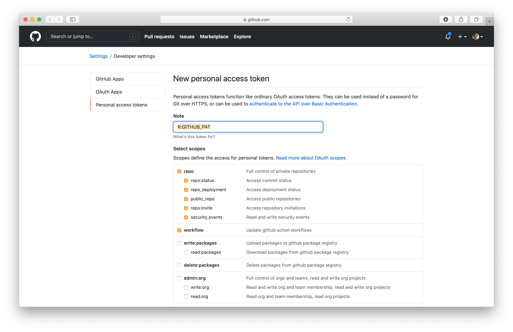

Connecting RStudio to GitHub
December 17 2021
install_github.RmdGitHub
for RStudio
Prerequisites
- Create a GitHub account - go to https://github.com/ and sign up with your university email address
- Verify your account
- Go to https://education.github.com, click Students and/or Get benefits for students, and follow the instructions
Possible problems
If you already have a GitHub account, then try registering it as an education account using the same link. We think that it won’t be critical for this course that you are registered with the education pack, so if you can’t, we’ll leave it for now. Please do remember though in case anything crops up later. However, you will receive emails for the course on the email address you are registered with here, so if you already have an account be aware of this. You can change the email address GitHub uses on your profile if you need to.
Ask to be added to the IBAHCM GitHub organisation
Go to the Discussion section of the RPiR repository on GitHub, and create a new discussion (category Registration)1. Simply ask to be added to the organisation. Once we’ve added you, we’ll respond and you should accept the invitation and acknowledge that you have successfully joined. This discussion section on the R package is where we will hold discussions and answer questions during the course, so you may want to bookmark it.
Meanwhile, set git and GitHub up with RStudio
In RStudio, open RStudio > Preferences (or Tools > Global Options if you’re using Windows). Go down to the GIT/SVN tab and ensure that Enable version control interface for RStudio projects is checked.
While you’re here, make sure you have a git executable. If this box is empty, you need to install git. Go here and scroll down to the Installation section, then restart RStudio.
Note that having git installed is different from installing
libgit2when you installed theRPiRpackage earlier, so you may have to install git here, even if you fixed the problems earlier!
Now back in RStudio, tell git your user name and email address (these are used to label each commit that you make to GitHub). Make sure the email address you enter here is the same as the one that you registered on GitHub. First, make sure that the usethis package is installed by calling library(usethis). If that doesn’t work, then install it, and then configure git using it:
install.packages("usethis") # If need be
library(usethis)
use_git_config(scope = "user",
user.name = "insert_github_username_here",
user.email = "insert_email_address_here")RStudio will now remember your details, so don’t worry about having to enter them again in the future. You should, however, check that your username and email address was entered correctly! So from the terminal tab, input the following (this will only work on a Mac):
git config --global --listAdd a PAT
Now in RStudio, run:
usethis::create_github_token()This will open a GitHub page in your browser, like this:

Scroll down to the bottom of this page and click on the green Generate Token button.
Your screen should now look something like this:

Copy the alphanumeric string (in the green box) by clicking on the tiny, blue clipboard.
Now back in RStudio, run:
gitcreds::gitcreds_set()This will prompt you in the RStudio Console tab with “Enter new password or token”. Paste in the alphanumeric string you copied above.
Now run:
usethis::edit_r_environ()This will open an .Renviron file in a new tab. Into this file paste GITHUB_TOKEN=my_github_pat, replacing my_github_pat with the alphanumeric string you copied earlier. Now save the file and restart RStudio and you’re done.
Note that if you have any problems getting RStudio to interact with GitHub, it may be useful to call:
usethis::git_sitrep()for more information.